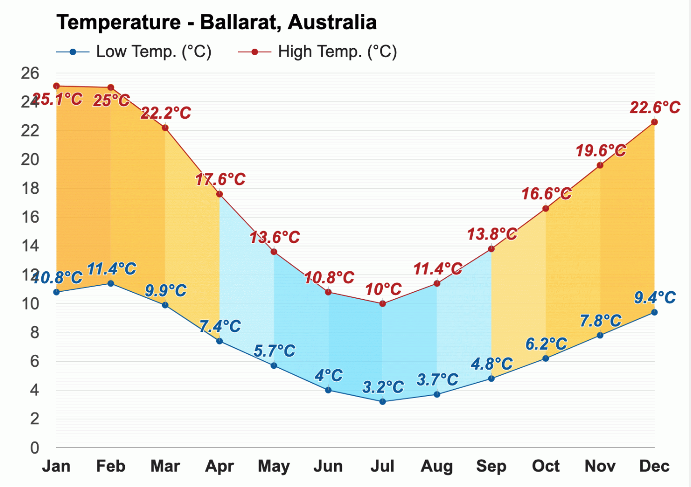
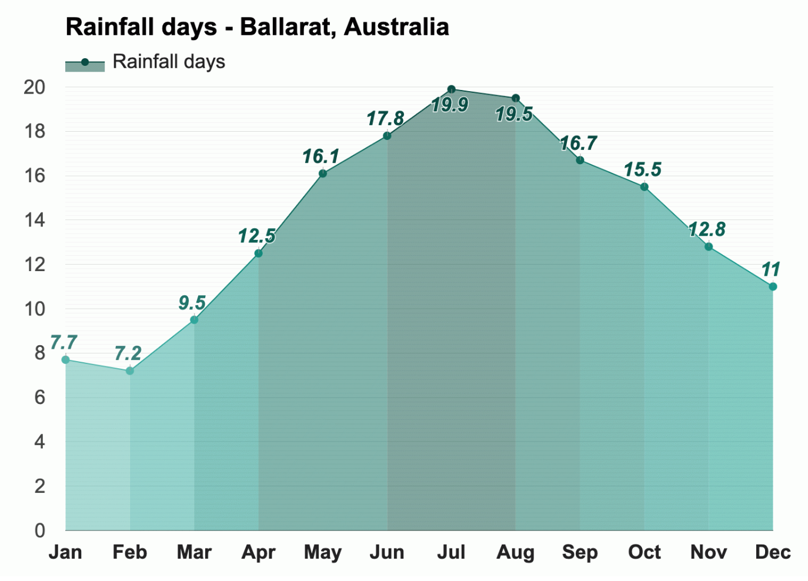

Temperature 
With an average high-temperature of 25.1°C (77.2°F) and an average
low-temperature of 10.8°C (51.4°F), January is the warmest month.
With an average high-temperature of 10°C (50°F) and an average
low-temperature of 3.2°C (37.8°F), July is the coldest month.

January has the most sunshine of the year, with an average of 9h of
sunshine, and May through July, with an average of 4h of sunshine,
are months with the least sunshine in Ballarat, Australia.
Rain
In Ballarat, Australia, during the entire year, the rain falls for
166.2 days and collects up to 691mm (27.2") of precipitation.

The most humid month in Ballarat is June, with an average relative
humidity of 76%. August is the month with the most rainfall. Rain
falls for 19.5 days and accumulates 75mm (2.95") of precipitation.
The least humid month is January, with an average relative humidity
of 42%, as January is the month with the least rainfall in Ballarat.
Rain falls for 7.7 days and accumulates 38mm (1.5") of
precipitation.
* The above information is sourced from Weather-At. Take a
visit for
more information...
Population 113,482 (City)
Median Age 42
Ancestry
The most common ancestries in Ballarat were English 30.2%,
Australian 29.0%, Irish 11.0%, Scottish 8.8% and German 3.1%.
Country of birth
82.4% of people were born in Australia. The most common countries
of birth were England 2.7%, New Zealand 0.9%, India 0.6%,
Netherlands 0.6% and China (excludes SARs and Taiwan) 0.5%.
Religion
In Ballarat, Christianity was the largest religious group reported
overall (56.4%).
The most common responses for religion in Ballarat were No
Religion, so described 36.7%, Catholic 23.1%, Anglican 11.9%, Not
stated 9.9% and Uniting Church 6.6%.
* The above information is sourced from
Australian Bureau of Statitics. Take a visit for
more information...
Skate and BMX
Over the last 20 years there has been a significant growth in the
interest and participation of action sports such as skateboarding
and BMX.
Albury Skate Park
Thurgoona Skate Park
Springdale Heights Pump Track
Boat ramps
There are five boat ramps in the Albury region, with access to
either the Murray River or Lake Hume. All ramps offer easy access to
the water as well as nearby services.
Lake Hume Village Boat Ramp
Kremur Street
Mungabareena Reserve
Walking and cycling trails
Albury has more than 50 kilometres of interlinked on and off-road
trails, offering walkers and cyclists of all ages, safe and
enjoyable access to our natural environment and places of interest.
Heritage Walk
Nail Can Hill / Ridge Trail
Bungambrawatha Creek Trail
Rainforest Walk
* The above information is sourced from
Albury City Government. Take a visit for
more information...